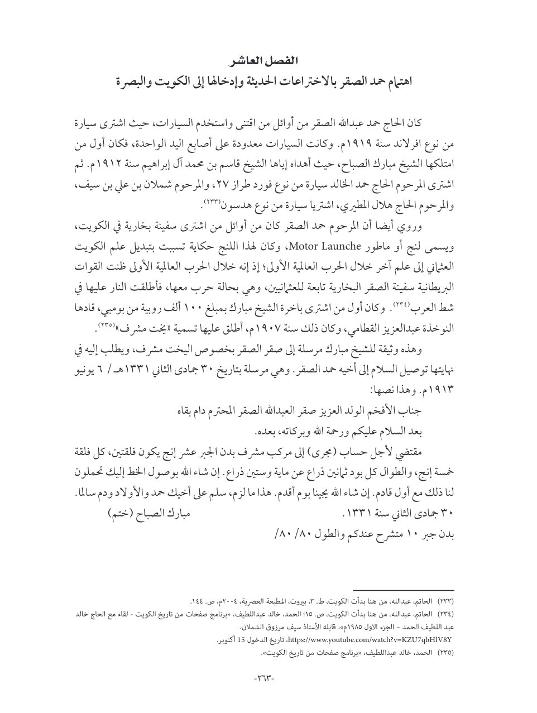

١٩٠٧ · تاريخ شفوي منقول في دراسة وثائقية
النوخذة عبدالعزيز القطامي يقود أول باخرة في الكويت، يخت الشيخ مبارك «مشرف»
ما هي
اشترى الشيخ مبارك الصباح باخرة من بومبي سنة ١٩٠٧ بمبلغ ١٠٠ ألف روبية وأطلق عليها «يخت مشرف»، ويذكر الكتاب أنها أول باخرة اشتُريت في الكويت وأن قائدها النوخذة عبدالعزيز القطامي. وتنشر الصفحة نفسها رسالة الشيخ مبارك المؤرخة ٣٠ جمادى الثانية ١٣٣١ (٦ يونيو ١٩١٣) إلى صقر العبدالله الصقر بخصوص تجهيز اليخت.
أهميتها
تضع عبدالعزيز قائدا ليخت الحاكم نفسه، أول باخرة في الكويت. ويذكر كتاب الحجي أيضا أنه استُدعي إلى بومبي لإحضار «مشرف».
من المقصود
كان النوخذة عبدالعزيز القطامي سنة ١٩٠٧ هو عبدالعزيز بن عبدالوهاب أخو عيسى، ويذكره الحجي بأنه النوخذة الذي استُدعي إلى بومبي لإحضار «مشرف».
صور الصفحات

النص الأصلي
ملاحظات
ص ٢٦٣ من الكتاب. ومصدر المؤلف عن اليخت كتاب عبدالله الحاتم «من هنا بدأت الكويت» ص ١٥، ومقابلة تلفزيونية مع خالد عبداللطيف الحمد سنة ١٩٨٥.
أسماء أخرى
المصادر
د. فيصل عادل الوزان، تجارة النقل البحري في الكويت من خلال سيرة حمد عبدالله الصقر، ٢٠١٩، ص ٢٦٣؛ والحجي، نواخذة السفر الشراعي، ص ٥٢ إلى ٥٤. ونسخة محفوظة في درايف العائلة.
مرجع الأرشيف
- Al-Wazzan 2019, p. 263 · اهتمام حمد الصقر بالاختراعات الحديثة
كيف كُتب هذا النص: النص العربي كما طبعه الكتاب. الترجمة الإنجليزية من Claude، يرجى مراجعتها.
افتح في الموقع التفاعلي